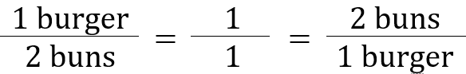
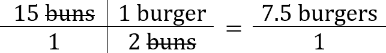
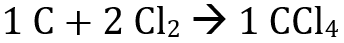
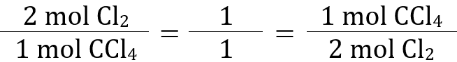
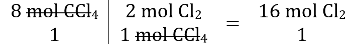

Before we get started with the mole and stoichiometry, let's talk about something that we're all familiar with - recipes. Here's a basic recipe for a burger:
As we can see, the most basic burger can be made using one patty and two buns. So, how many burgers can be made if you had unlimited patties and 15 buns? The trick is that the image above is an equilvalence statement: one burger takes two buns.

Thus, if we have the problem of "how many burgers can be made with 15 buns", we can set up the conversion box like so, giving us the answer of 7.5 burgers (or 7, since it's sad to eat only half of a burger =/).

Now, let's look at the chemical equation below:

Taken literally, this can be read as "1 atom of carbon and 2 molecules of chlorine make 1 molecule of chloroform, CCl4". Aside from the subscript "2" after the first Cl (only certain elements do this) and the semantics of atoms versus molecules, this is a valid interpretation of the chemcial equation. However, another interpretation is to read it in terms of moles. Much like a dozen of something is 12 of that thing, a mole of something is 6.02 * 10^23 of that thing - it's an incredibly huge number, but for chemists, it makes calculations with chemicals more tangible rather than working with individual atoms and molecules. So, this equation can be read as "1 mole of carbon and 2 moles of chlorine make 1 mole of chloroform."
Let's use this equation to take a problem then: "If there's excess (extra) carbon, how many moles of chlorine are required to produce 8 moles of chloroform?" Well, the equation tells us that "2 moles of chlorine make 1 mole of chloroform":

Since we're given the starting value of "8 moles of chloroform", we're going to use the fraction "2 moles of chlorine over 1 mole of chloroform" - the moles of chloroform in the numerator and denominator will cancel, thus leaving 16 moles of chlorine as our answer.

This ability to convert from quantities of one chemical to another using a chemcial equation is the heart of stoichiometry. There are other stoichiometric calculations which we haven't discussed (such as moles to grams), but you should have a strong idea of the basic concept behind the mole and how to set up a conversion box. Thanks for your time, and please leave feedback below!